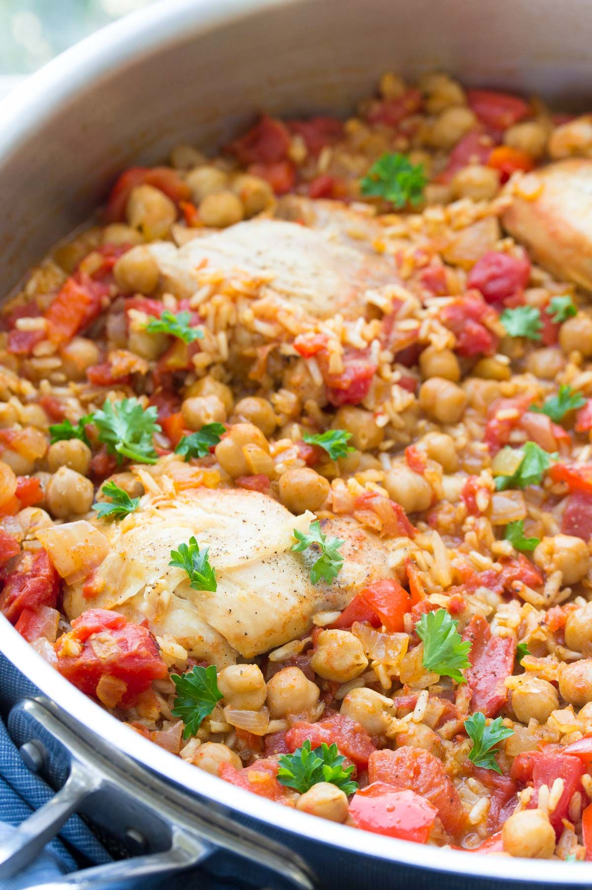

One-Pot Spanish Chickpea Chicken

- Meal
- Dinner
- Serves
- 6
- Protein
- chicken + legume
- Cook
- stovetop · 20 min active / 60 min total · easy
- Make-ahead / leftovers
- no / yes
- Mediterranean
- yes
- WW tier
- light
- Status
- Trying out (probation)
Kristine's one-skillet chicken thighs nestled into smoked-paprika brown rice with chickpeas, tomatoes, and peppers — a weeknight nod to arroz con pollo that already uses brown rice. Hits legume + Mediterranean + cooked tomato in one pan.
Ingredients
- 1 1/2 Tbsp olive oil
- 2 lb boneless skinless chicken thighs (about 6)
- Salt and pepper
- 1 onion, chopped
- 2 red bell peppers, chopped
- 6 cloves garlic, minced
- 1 1/2 tsp smoked paprika
- 3/4 tsp ground cumin
- 1 1/2 tsp salt, 1/3 tsp black pepper (for the rice)
- 1 can (28 oz) diced tomatoes (or 2 cans 15 oz)
- 2 2/3 cups low-sodium chicken broth
- 1 1/2 cups long-grain brown rice, rinsed and drained
- 2 cans (15 oz) chickpeas, rinsed and drained
- Chopped parsley, to serve
Method
- Heat the olive oil in a large, deep skillet or Dutch oven with a lid over medium-high. Season the chicken and brown 3 minutes per side. Move to a plate.
- Lower to medium. Add onion and peppers; cook 2–3 minutes. Add garlic; 30 seconds.
- Add the salt, pepper, smoked paprika, cumin, tomatoes, and broth. Stir in the brown rice and chickpeas. Nestle the chicken back in.
- Bring to a low simmer, cover, and cook 35–40 minutes, stirring gently every 10 minutes, until the rice is tender and most of the liquid is absorbed.
- Parsley on top; serve from the pan.
Notes
- Scaled ×1.5 from Kristine's serves-4 (1.25 lb thighs / 1 cup rice / 1 can chickpeas). We used a full 2 lb of thighs and two cans of chickpeas so the legume portion is real.
- Already brown rice in the source — no house-rule tweak needed. Needs a pan big enough for 1.5x; a 5–6 qt Dutch oven is safest.
- Rejected as its near-twin: Budget Bytes' Spanish Chickpeas & Rice (same paprika-cumin-tomato-rice-chickpea base, no chicken). This card covers it — drop the chicken and add a third can of chickpeas for a meatless version.
- Mediterranean ✓ 4 of 4: olive oil, poultry + legumes, peppers/tomatoes, brown rice. light.